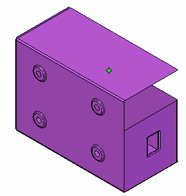

Edge connectors
When to use Edge connectors
Use the Simulation tab→Connectors group→Edge command to create connections where you want to maintain rigid contact during meshing. You can:
-
Create edge-to-face connections (or edge-to-surface connections).
Edge connections transfer the load stress from one part to the next.
You can select the edges and surfaces on two sheet metal parts that meet at a 90 degree angle to create rigid links between them.

The Edge connector simulates the functionality of the Femap Closest Link command, using rigid elements that constrain all six degrees of freedom (DOF).
Using the Edge connector command
The Edge connector command works like the Manual connector command. It uses the Assembly Connector command bar to specify and create the connections, and you are prompted to select elements to connect from and elements to connect to.
-
When Connector Type=Rigid, you can create connections between two or more edges. You also can create a connection between an edge and a surface, or an edge and a face.
-
When Connector Type=Glue, you can enter a search distance and a penalty factor in the Assembly Connector Properties dialog box before you create connections by:
-
Selecting an edge and a face.
-
Selecting an edge and a surface.
Note:This differs from the Manual connector command (Glue), which creates connections between faces and surfaces.
-
The connections are generated automatically. Each node on the From edge is connected to the nearest node on the To edge, face, or surface.
You can edit the selection set to add or remove elements from it by clicking the Edge Connector 1 label in the graphics window.
How do I
Create connectors based on assembly relationshipsCreate assembly connectors using the Auto command
Create manual connections between faces or surfaces
Replace target and source connection regions
Change connector region direction
Create edge-to-edge connections
Create edge-to-face connections
Learn more
Assembly connectorsTarget and source connector regions
Assembly connector handles, labels, and symbols
Glue and no penetration contact connectors
Thermal connectors
Look up more details
Auto command barAssembly Connector command bar
Assembly Connector Properties dialog box